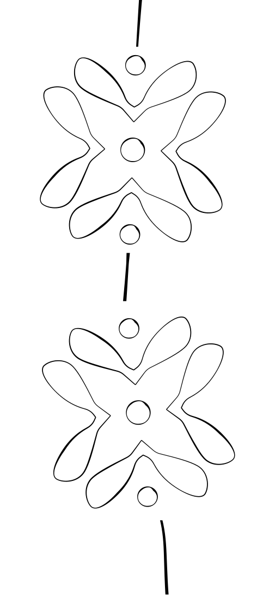

About
Projekt KOŘENY
Kultura je způsob života, který nás formuje, definuje a ukazuje, co všechno pověstné „zlaté české ručičky“ dokážou. Jak ale vypadají české tradice v 21. století? Na tuto otázku odpovídá projekt KOŘENY studentů Fakulty multimediálních komunikací Univerzity Tomáše Bati ve Zlíně. Jeho hlavní myšlenkou je transformovat české a slovanské zvyky do moderního pojetí a připomenout si, odkud pocházíme, kde máme své kořeny a co nás definuje jako společenský celek. Vzniká tak fúze historie a mladistvé interpretace, která otevírá diskuzi o uchování kulturního dědictví v dnešní společnosti.
Síla celého projektu spočívá v unikátní mezioborové spolupráci pěti univerzitních ateliérů. Celý proces odstartovali studenti Průmyslového designu, kteří navrhli kolekci porcelánových výrobků úzce spjatých s českými svátky. Tuto základní řadu následně doplnili svými autorskými produkty studenti ateliérů Design šperku a Design obuvi. Aby byl vizuální dojem dokonalý, studenti Produktového designu vytvořili pro každý předmět obal přímo na míru. Všechna tato rozmanitá díla nakonec propojí ateliér Tvorba prostoru, který se postará o kompletní architektonické řešení a prezentaci prací na společné výstavě.
Inspirační zdroje mladých tvůrců jsou široké a sahají od duchovních tradic až po ikony české gastronomie. Kolekce tak reflektuje tradiční svátky a zvyky, jako je Otvírání studánek, Dušičky, masopust či Hromnice. Vedle lidového folklóru však designéři vzdávají hold i typicky českým vynálezům a fenoménům, bez kterých si náš stůl neumíme představit. V projektu tak potkáte nový pohled na světový unikát v podobě kostkového cukru, fenomén českého obloženého chlebíčku nebo tradiční pečivo a pivo. Projekt KOŘENY jasně dokazuje, že tradice nejsou mrtvou minulostí, ale živou inspirací pro dnešní dobu.

Karolína Borýsková
Jakub Hunal
Kateřina Rabinská
Adam Keprta